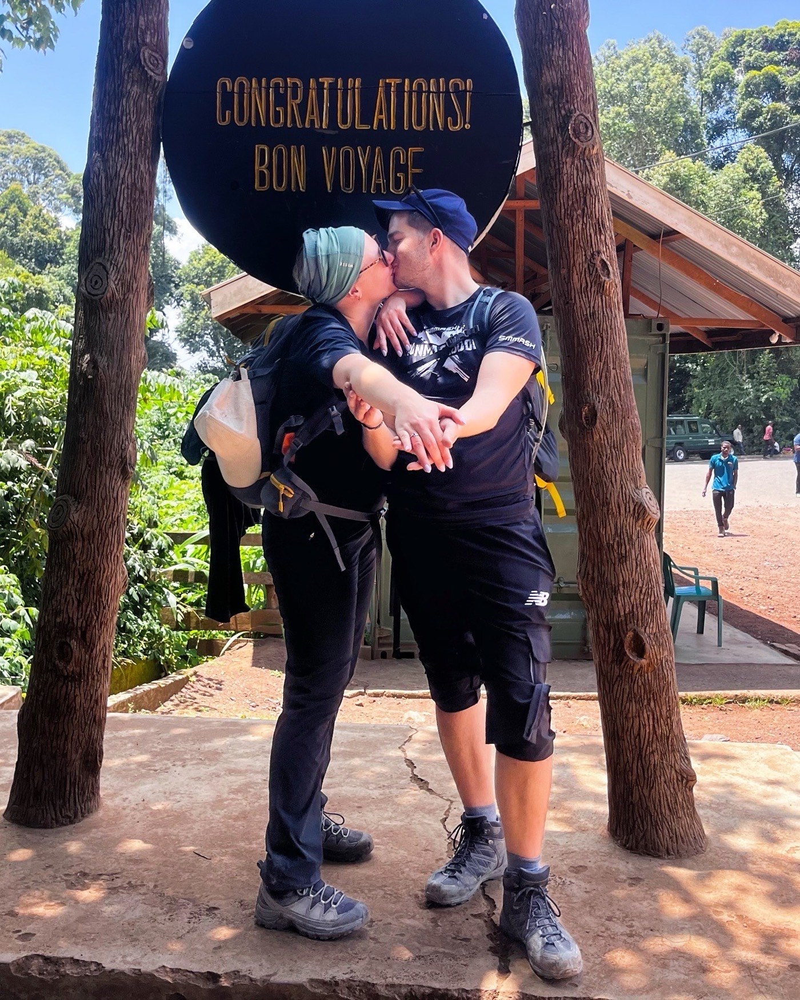
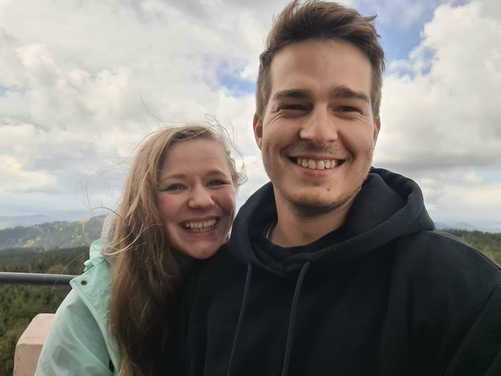

Our Story Nasza Historia A Mi Történetünk
It started with an Instagram DM, a home-cooked first date, and one very determined Hungarian. Then came Thailand — where we accidentally booked holiday in the same place at the same time — three months of quarantine apart, and then, somehow, moving in together like it was the most obvious thing in the world.
Since then: two months backpacking Asia, a hurricane in Cuba, a proposal on the summit of Kilimanjaro, and approximately one thousand bowls of pho. We are, at our core, two people who are happiest with a backpack, a good meal, and each other. Food, travel, and lots of fun — that's the whole story.
Welcome to our wedding — eat well, dance hard, and please don't bring us flowers. We already live on 40 square metres with 20 plants.
Zaczęło się od wiadomości na Instagramie, kolacji gotowanej na pierwszą randkę i jednego bardzo zdeterminowanego Węgra. Potem przyszła Tajlandia — gdzie przypadkowo zarezerwowaliśmy wakacje w tym samym miejscu i czasie — trzy miesiące kwarantanny osobno, a potem, nie wiadomo jak, wprowadzenie się razem, jakby to była najbardziej oczywista rzecz na świecie.
Od tamtej pory: dwa miesiące z plecakami w Azji, huragan na Kubie, oświadczyny na szczycie Kilimandżaro i mniej więcej tysiąc misek pho. Jesteśmy, w głębi duszy, dwójką ludzi, którym najlepiej jest z plecakiem, dobrym jedzeniem i sobą nawzajem. Jedzenie, podróże i mnóstwo zabawy — oto cała historia.
Witajcie na naszym weselu — jedzcie dużo, tańczcie mocno i proszę, nie przynoście nam kwiatów. Już mieszkamy na 40 metrach kwadratowych z 20 roślinami.
Egy Instagram-üzenettel kezdődött, egy házilag főzött első randevúval és egy nagyon elszánt magyarral. Aztán jött Thaiföld — ahol véletlenül ugyanoda és ugyanakkor foglaltunk nyaralást — három hónap karantén külön-külön, majd valahogy összeköltöztünk, mintha ez lett volna a legtermészetesebb dolog a világon.
Azóta: két hónap hátizsákos utazás Ázsiában, egy hurrikán Kubában, lánykérés a Kilimandzsáró csúcsán és körülbelül ezer tál pho. Alapvetően két ember vagyunk, akik akkor a legboldogabbak, ha van hátizsákjuk, jó étkezés és egymás. Étel, utazás és rengeteg móka — ez az egész történet.
Üdvözlünk az esküvőnkön — egyetek jól, táncoljatok keményen és kérjük, ne hozzatok nekünk virágot. Már 40 négyzetméteren élünk 20 növénnyel.